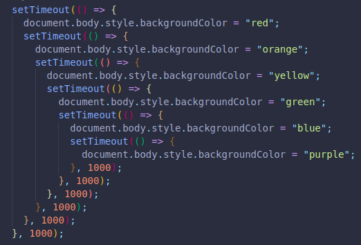
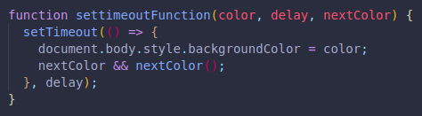
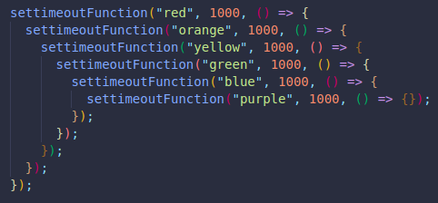

When creating sequences, or having specific code run only after another code has ran, we can get into callback hell.
This means we can end uo creating too many callbacks, the solution is nesting!
The background color of our pages changes in the order of the colors of the rainbow, one new color every second.
We can create a setTimeout for every color:
Or we can create a function, and use it as an argument nested inside our first function callback.
 